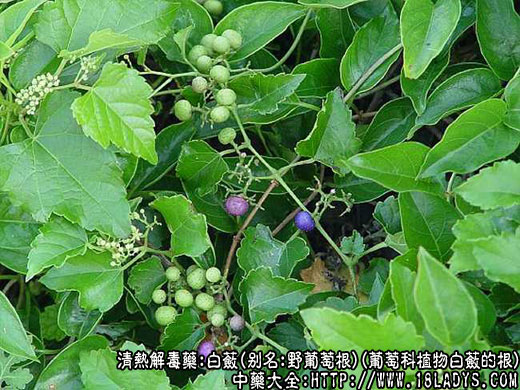
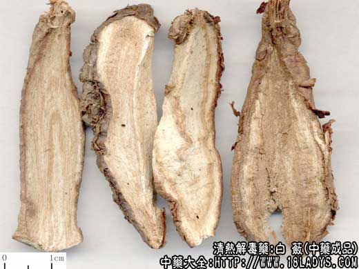
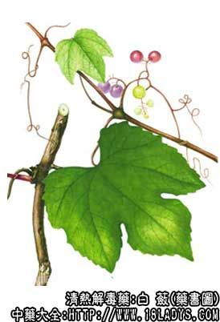

白蔹为常用中药。《神农本草经》列为下品。
别名：山地瓜、野葡萄根。
来源：为葡萄科植物白蔹的根，其子亦供药用。野生与栽培均有。
产地：主产于江苏、安徽、山东等地。
性状鉴别：干燥的根呈纺锤，两头较尖，略弯曲，长3～12厘米，直径1～3厘米。外皮红棕色，有皱纹，易层层剥落、内面淡红棕色。纵切面（瓣）周边常向内卷曲，中部有一凸起的棱线。斜片呈卵圆形，厚1.5～3毫米，中央略薄。质轻、易折断，折断时有粉尘飞出，断面白色或淡红色。气微，味甘。
以肥大，断面粉红色，粉性足者为佳。
主要成分：根块含粘液质和淀粉。
药理作用：白蔹的1:3的水浸剂在试管内对同心性毛癣菌，奥杜盎氏小芽肥癣菌，腹股沟和红色表皮癣菌等皮肤真菌有不同程度的抑制作用。
炮制：切片、生用。
性味：苦、甘、辛、凉。
归经：入肝、心、脾经。
功能：清热解毒、散结、生肌、止痛。
主治：痈肿疮毒，发背、瘰疠、烫伤、血痢、肠风。
临床应用：白蔹，苦则泄，辛则散，甘则缓，凉则除热，故主痈肿疽疮，散结止痛。
1、治瘰疠、皮肿中热痱：常与黄连等配伍使用。
2、治疮、疖、痈肿、蜂窝组织、淋巴结炎等各种急性炎症，白蔹研粉，配酒精调成糊涂患处，有非常好的疗效，据报道，上述炎症，用药2～3天可愈，有效率为95%左右。
使用注意：脾胃虚寒及无实活者忌服。
用量：3～9g，或入丸、散。外用：研末撒涂。
处方举例：1、白蔹散《鸡蜂普济方》，治疗蔹疮、肿疖：白蔹、白芨、络石藤各15g。共为细末，干撒疮上。
2、治冻耳成疮，或痒或痛者《圣惠方》：白蔹，黄柏各15g，为末，先以汤洗疮，后用香油调涂。
注：贵州省贵阳市及遵义专区曾以紫茉莉花根《俗称胭脂花根》与隔山撬（俗称）充白蔹。目前虽已从外省调入白蔹，但部分地区仍有使用隔山撬者，应注意纠正。